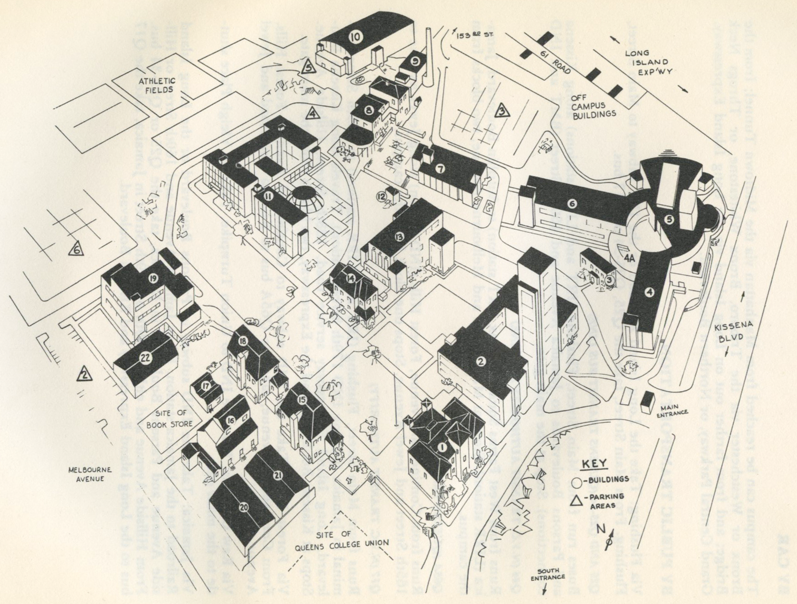

A Partial History of Queens College Campus Maps
1940
1956
1959
1960
1962
1970
1980

1 • Jefferson Hall
—Registrar's Office
—Business Office
—Service Offices
2 • Academic II
—Administrative Offices
—College Relations
—Information Center
—School of General Studies
—Adult Continuing Education (ACE)
Program
—Adult Education Program
—Department of Art, Classical, and
Oriental Languages
—German and Comparative Literature
—Linguistics
—Mathematics
—Romance Languages
—Slavic Languages
3 • Center of International Education
—Program of study Abroad
—English Language Institute
—Foreign Student Adviser
4, 4a, 5, 6 • Charles S Colden Center of
Music and Speech
4—Rufus King Hall (Communication Arts
and Sciences Wing)
4a—Samuel Gertz Speech and Hearing
Center
5—Colden Auditorium and Queens
College Theatre
6—Karol Rathaus Hall (Music Wing)
7 • Queens College Dining Hall
8 • College Memorial Center
—Lounges and Student Organization
Offices
9 • Heating Plant
10 • Maurice FitzGerald Gymnasium
—Department of Health and Physical
Education
11 • Social Sciences Building
—Graduate Registrar
—Educational Clinic
—Department of Anthropology,
Economics, Education, History, Philosophy
Political Science, Sociology, Student Personnel
12 • Architectural and Engineering
—Dining Hall Offices
13 • Paul Klapper Library
—Bookstore
—Central Receiving
14 • Graduate Biology Laboratories
—University of the Air
—Offices
15 • Department of Physics
16 • Art Studios
17 • Annex
—Psychology Research
18 • Department of Biology
—Biology Laboratories
19 • Ira Remsen Hall
—Department of Chemistry, Geology,
Home Economics, Psychology
20 • Temporary II
—Department of English
21 • Temporary I
—Computer Center
—Offices
22 • Temporary III
—SEEK Offices
—Psychology Laboratories and Machine
Shop
—City University Mutual Benefits
Instuctional Network (CUMBIN)
Electrical Industries Building (E1B), 185-11
Jewel Avenue
—Department of Nursing
—Biology, Geology, Home Economics
Laboratories
Off-campus Buildings, 61 Road
—Alumni Office
—Archaeology
—SEEK
—Institute for Community Studies
—Latin American Area Studies
—Teacher Placement